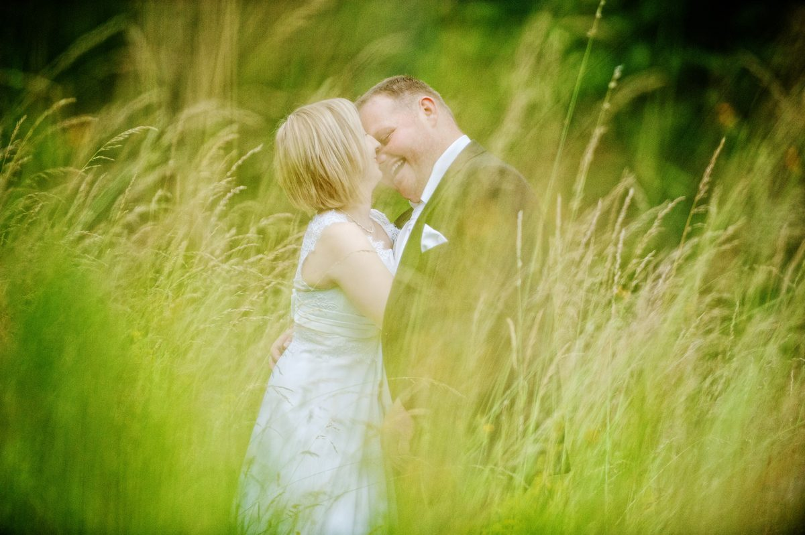
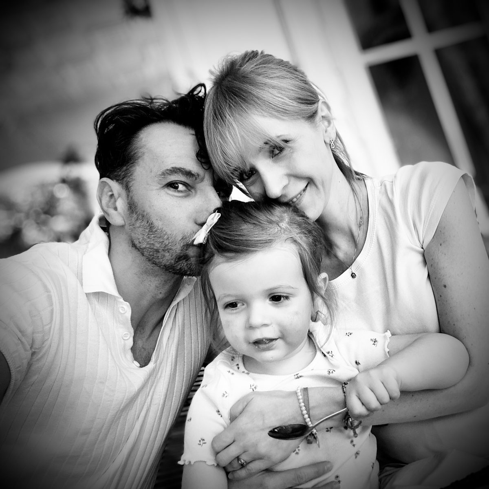

Historie zapisane
światłem i emocjami
Fotografia ślubna i rodzinna — o świetle, bliskości i chwilach, do których chce się wracać.
Nie ustawiam chwil — czekam na nie
Najmocniejsze kadry rodzą się w ciszy — w spojrzeniu, geście i świetle, które trwa moment. Moją rolą jest być blisko, a zniknąć w tle.

Momenty, do których się wraca

Patrzę uważniej
Fotografowałem już kilkadziesiąt ślubów — pełnych wzruszeń, napięcia, radości i momentów, które nie zdarzają się dwa razy. Ale dopiero ojcostwo pokazało mi z bliska, jak bezcenne są codzienne kadry.
Odkąd zostałem tatą, najczęściej fotografuję najpiękniejszą kobietę na świecie — moją córkę. Dlatego dziś patrzę uważniej: szukam nie tylko ładnych obrazów, ale chwil, do których chce się wracać.
Mariusz Świerguła
Narzędzia w służbie światła
Sprzęt jest dla mnie tylko sposobem, by oddać światło i emocję dokładnie tak, jak je widzę — nigdy celem samym w sobie.
Pracuję w naturalnym świetle, blisko ludzi — reszta to cierpliwość i uważność.
Wysoka rozdzielczość i wierne tony — oddaje miękkie przejścia światła i detal, którego nie widać na pierwszy rzut oka.
Stała, jasna przysłona pozwala podejść blisko emocji — miękko odcina postać od tła i maluje spokojne, kremowe światło.
Uniwersalne szkło o stałym, jasnym świetle — prowadzi opowieść od szerokiego kadru po detal, bez gubienia atmosfery dnia.
W zależności od historii sięgam też po obiektywy szerokokątne i teleobiektywy o stałym świetle — tam, gdzie liczy się przestrzeń albo dyskretny, bliski kadr z dystansu.
Opowiedz mi o swojej historii
Napisz kilka słów o swoim ślubie, rodzinie albo sesji. Odpowiem spokojnie i konkretnie.
+48 600 353 150